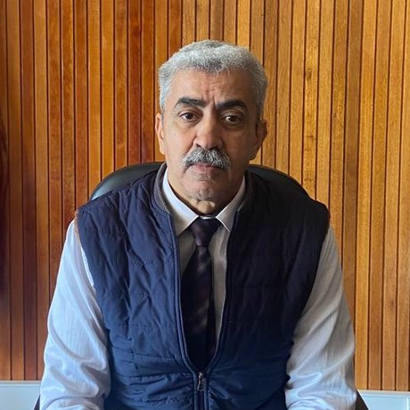

Bienvenue sur la plateforme pédagogique du Professeur El Bekkaye Maarouf. Vous y trouverez les cours, fascicules, vidéos, exercices corrigés et annales d’examens destinés aux étudiants de chimie.
Le Professeur El Bekkaye Maarouf (E. B. Maarouf) est un enseignant-chercheur spécialisé en chimie, dont le parcours académique et scientifique est étroitement lié à la Faculté des Sciences d’Oujda et à l’Université Mohammed Premier (UMP).
Ses activités scientifiques s’inscrivent notamment dans le domaine de la chimie appliquée et de l’environnement, avec un intérêt pour la recherche, la transmission des connaissances et la formation des étudiants.
Son parcours au sein du Laboratoire de Chimie Appliquée et Environnement (LCAE) témoigne de son engagement dans le développement de la recherche scientifique et de l’enseignement supérieur.
À travers son expérience pédagogique, le Professeur Maarouf contribue à la formation des étudiants dans différentes disciplines de la chimie, en mettant à leur disposition des ressources destinées à faciliter la compréhension des concepts fondamentaux et l’approfondissement des connaissances.